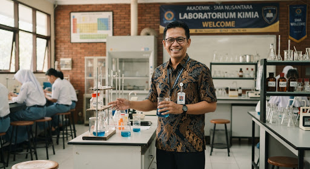
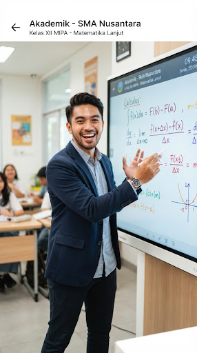

Pendidikan yang Membebaskan Potensi
Membentuk karakter Profil Pelajar Pancasila melalui pembelajaran yang berpusat pada siswa.
Prinsip Kurikulum
Fokus pada Materi Esensial
Pembelajaran mendalam untuk kompetensi dasar seperti literasi dan numerasi tanpa terburu-buru.
Fleksibilitas Belajar
Guru dapat menyesuaikan metode pembelajaran sesuai dengan tahap capaian dan karakteristik peserta didik.
Pengembangan Karakter
Proyek Penguatan Profil Pelajar Pancasila (P5) memberikan kesempatan belajar melalui isu nyata.
Struktur Akademik
Fase E (Kelas X) explore
Siswa mengambil mata pelajaran umum tanpa penjurusan. Fokus pada eksplorasi minat dan bakat untuk persiapan pemilihan peminatan di kelas XI.
Fase F (Kelas XI & XII) route
Siswa memilih mata pelajaran pilihan sesuai dengan kelompok peminatan (MIPA, IPS, Bahasa, atau Vokasi) yang menunjang karir masa depan.
Tenaga Pendidik
Hubungi Kami chevron_rightDedikasi untuk membimbing generasi bangsa.

Dr. Budi Santoso, M.Pd.
Membawa visi inovasi dalam pembelajaran berbasis teknologi di era digital.
Siti Rahmawati, M.Si.
Fokus pada implementasi Kurikulum Merdeka dan pendampingan karakter siswa.

Andi Pratama, S.Pd.
Membuat matematika menyenangkan melalui pendekatan pemecahan masalah dunia nyata.